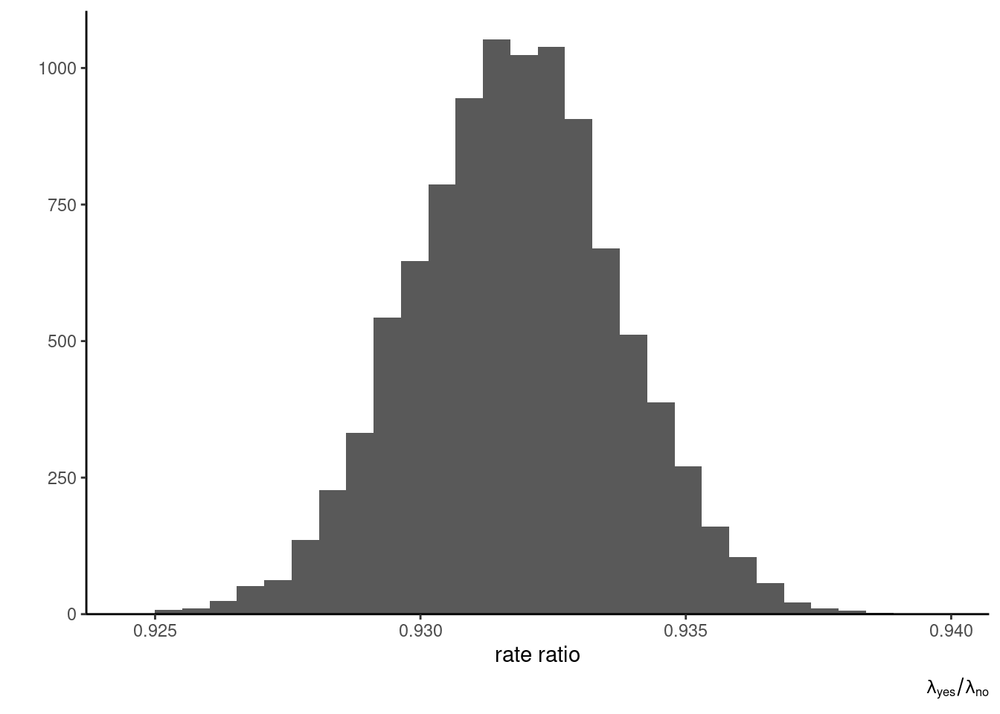

Consider a simple random sample of size \(n\) from the Wald distribution, with density \[\begin{align*}
f(y; \nu, \lambda) = \left(\frac{\lambda}{2\pi y^{3}}\right)^{1/2} \exp\left\{ - \frac{\lambda (y-\nu)^2}{2\nu^2y}\right\}\mathrm{I}(y > 0)
\end{align*}\] for location \(\nu >0\) and shape \(\tau>0\).
Write down the likelihood and show the posterior only depends on the data through the sufficient statistics \(\sum_{i=1}^n y_i\) and \(\sum_{i=1} y_i^{-1}\).
Show that the joint prior \[ p(\lambda) \sim \mathsf{Ga}(\alpha, \beta), \quad p(1/\nu \mid \lambda) \sim \mathsf{No}(\mu, \tau^{-1}\lambda^{-1}),\] the product of a gamma and a reciprocal Gaussian, is conjugate for the Wald distribution parameters.
Derive the parameters of the posterior distribution and provide an interpretation of the prior parameters. Hint: write down the posterior parameters as a weighted average of data-dependent quantities and prior parameters.
Derive the marginal posterior \(p(\lambda)\).
Solution. The log likelihood for an independent and identically distributed sample is \[\begin{align*}
\ell(\nu, \lambda) = \frac{n}{2} \ln(\lambda) - \frac{3}{2} \sum_{i=1}^n \ln(y_i) - \frac{\lambda}{2\nu^2} \sum_{i=1}^n (y_i - 2\nu + \nu^2/y_i)
\end{align*}\] and we readily see that the model is an exponential family with sufficient statistics \(t_1(\boldsymbol{y}) = \sum_{i=1}^n y_i\) and \(t_2(\boldsymbol{y}) = \sum_{i=1}^n y_i^{-1}\).
The joint prior is of the form \[\begin{align*}
p(\lambda, \nu) &\propto \lambda^{\alpha-1}\exp(-\lambda \beta) \\
p(\nu \mid \lambda) & \propto \frac{(\lambda \tau)^{1/2}}{\nu^2}\exp\left\{-\frac{\lambda\tau }{2}(\nu^{-1}-\mu)^2\right\},
\end{align*}\] where the last step follows from a change of variable. To show conjugacy, we must prove that the posterior is of the same family. Multiplying the likelihood with the joint prior and expanding the squares in the exponential terms, we get \[\begin{align*}
p(\lambda, \nu \mid \boldsymbol{y}) &\propto \frac{\lambda^{(n+1)/2+\alpha-1}}{\nu^2}\exp(-\lambda \beta) \exp\left[ -\frac{\lambda}{2}\left\{\frac{\tau}{\nu^{2}}-2\frac{\tau\mu}{\nu} + \tau\mu^2 +\frac{t_1(\boldsymbol{y})}{\nu^2} - \frac{2n}{\nu} + t_2(\boldsymbol{y})\right\}\right] \\& \propto \frac{\lambda^{(n+1)/2+\alpha-1}}{\nu^2}\exp(-\lambda \beta) \exp\left[ -\frac{\lambda}{2}\left\{\frac{\tau + t_1(\boldsymbol{y})}{\nu^2} - 2\frac{\tau\mu+n}{\nu} + \tau\mu^2 + t_2(\boldsymbol{y})\right\} \right]
\\& \propto \frac{\lambda^{(n+1)/2+\alpha-1}}{\nu^2}\exp\left[-\lambda \left\{\beta + \frac{c_3-c_1c_2^2}{2}\right\}\right] \exp\left\{ -\frac{\lambda c_1}{2}\left(\frac{1}{\nu^2} - \frac{2c_2}{\nu} + c_2^2\right)\right\}
\end{align*}\] where \(c_1=\{\tau + t_1(\boldsymbol{y})\}\), \(c_2 =(\tau\mu+n)/c_1\) and \(c_3 =\tau\mu^2 + t_2(\boldsymbol{y})\).
TO BE CONTINUED
Exercise 2.2
Consider the Rayleigh distribution with scale \(\sigma>0\). It’s density is \[f(y; \sigma) = \frac{y}{\sigma^2} \exp\left(-\frac{y^2}{2\sigma^2}\right)\mathrm{I}(x \geq 0).\]
Derive the Fisher information matrix and use it to obtain Jeffrey’s prior for \(\sigma\). Determine whether the prior is proper.
Solution. The log likelihood for a sample of size one is \[\begin{align*}
\ell(\sigma) = \log(y) - 2\log(\sigma) - \frac{y^2}{2\sigma^2}
\end{align*}\] and the negative of the Hessian is \[\begin{align*}
\jmath(\sigma) = -\frac{\partial \ell(\sigma)}{\partial \sigma} = -\frac{2}{\sigma^2} + \frac{3y^2}{\sigma^4}
\end{align*}\] To compute the Fisher information, we need the second moment of the Rayleigh distribution, \[\begin{align*}
\mathsf{E}(Y^2) &= \int_0^\infty \frac{y^3}{\sigma^2}\exp\left(-\frac{y^2}{2\sigma^2}\right)\mathrm{d} y\\&= 2\sigma^2 \int_0^\infty u \exp(-u) \mathrm{d} u
\\&= 2\sigma^2
\end{align*}\] where we made the change of variable \(u= 0.5y^2\sigma^{-2}\), \(\mathrm{d} u = y\sigma^{-2}\mathrm{d} y\) and recovered the expected value of a unit exponential distribution.
The Fisher information is \(\imath(\sigma) = \mathsf{E}\{\jmath(\sigma)\}=-2/\sigma^2 + 6/\sigma^2 = 3/\sigma^2\). Jeffrey’s prior for the scale, \(p(\sigma) =|\imath(\sigma)|^{1/2}\), is proportional to \(\sigma^{-1}\) and thus improper.
Exercise 2.3
Consider a binomial model with an unknown probability of successes \(\theta \in [0,1]\) model. Suppose your prior guess for \(\theta\) has mean \(0.1\) and standard deviation \(0.2\)
Using moment matching, return values for the parameters of the conjugate beta prior corresponding to your opinion.
Plot the resulting beta prior and compare it with a truncated Gaussian distribution on the unit interval with location \(\mu=0.1\) and scale \(\sigma=0.2\).1
Solution. The beta distribution has expected value \(\alpha/(\alpha+\beta)\) and variance \(\alpha\beta(\alpha+\beta)^{-2}(\alpha+\beta+1)^{-1}\).
Since the system of equations is nonlinear, we need to solve numerically to find the two unknown value of the parameters or else simply substitute \(\beta = \alpha (1-\mu)/\mu\) in the equation for the variance.
beta_moments <-function(par, mean, variance){ alpha <- par[1] beta <- par[2]c(alpha/(alpha+beta) - mean, alpha*beta/(alpha+beta)^2/(alpha+beta+1) - variance)}# Numerical root finding algorithm# We need to give good starting valuesrootSolve::multiroot(f = beta_moments,start =c(0.1, 0.8),positive =TRUE,mean =0.1, variance =0.04)
and we find \(\alpha = 0.125\) and \(\beta=1.125\).
Let \(a = -\mu/\sigma\) and \(b = (1-\mu)/\sigma\) denote the standardized lower and upper bounds, respectively. The density of the truncated Gaussian with location \(\mu\) and scale \(\sigma\) on the unit interval is \[\begin{align*}
f(x; \mu, \sigma) = \frac{1}{\sigma}\frac{\phi\left(\frac{x - \mu}{\sigma}\right)}{\Phi(b) - \Phi(a)},
\end{align*}\] where \(\phi\) is the density of a standard Gaussian \(\mathsf{No}(0,1)\) and \(\Phi\) the corresponding distribution function.
The beta distribution, while matching the moments, is implying very low chance of success with a mode at zero. By contrast, the truncated Gaussian (which does not have mean \(\mu\) and variance \(\sigma^2\)) has the mode at \(\mu=0.1\). Which one is preferable depends on the context; we could also match the parameters of the truncated Gaussian.
Exercise 2.4
Replicate the analysis of Example 2.6 (Should you phrase your headline as a question?) of the course notes using the upworthy_question data from the hecbayes package.
Solution.
data(upworthy_question, package ="hecbayes")# Prior parametersalpha <-2.5# shapebeta <-0.04# rate# Pool data from all questions (only total counts matter)summary_stats <- upworthy_question |> dplyr::group_by(question) |> dplyr::summarize(total_impressions =sum(impressions),total_clicks =sum(clicks)) |> dplyr::ungroup() |>as.vector()# Extract total number of successes out of trials# Impressions here serve as countn_yes <- summary_stats$total_impressions[1]y_yes <- summary_stats$total_clicks[1]n_no <- summary_stats$total_impressions[2]y_no <- summary_stats$total_clicks[2]# Generate posterior sample draws# Since likelihood and priors are independent, # so are the posteriors for the rates. # We can draw independently from each.set.seed(1234)post_data_upworthy_question <-data.frame( yes =rgamma(n =1e4, shape = alpha + y_yes, rate = beta + n_yes),no =rgamma(n =1e4, shape = alpha + y_no, rate = beta + n_no))# Plot the histogram of the ratio of rates (question / no question)ggplot(data = post_data_upworthy_question,mapping =aes(x = yes/no)) +geom_histogram() +labs(x ="rate ratio", y ="",caption =expression(lambda["yes"]/lambda["no"])) +scale_y_continuous(expand =expansion(mult =c(0, 0.05))) +theme_classic()

# Compute the posterior mean for the quantitypost_mean <-with(post_data_upworthy_question, mean(yes/no))post_mean
[1] 0.9317745
Footnotes
Note that the parameters of the truncated Gaussian distribution do not correspond to moments!↩︎